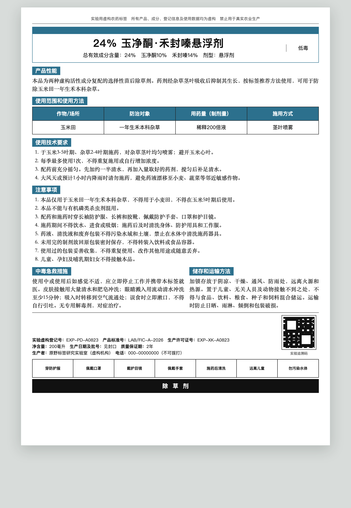
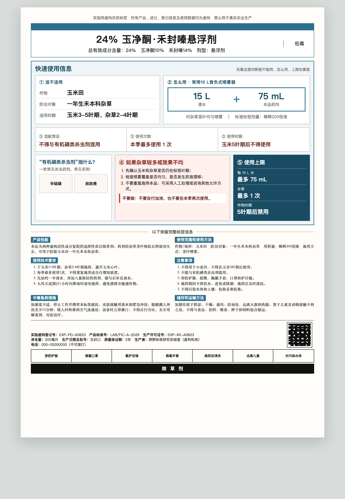
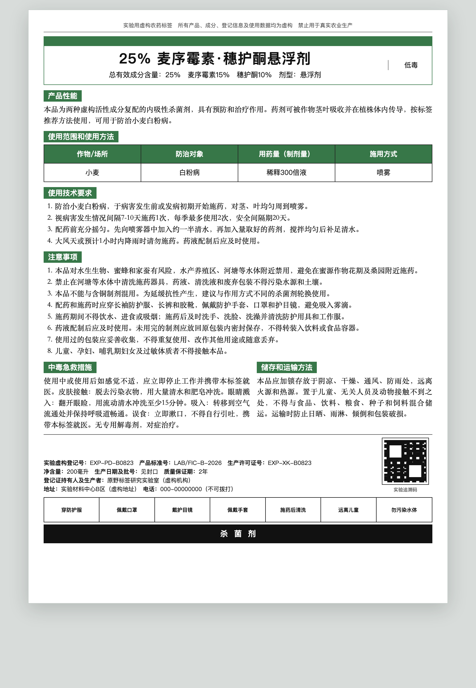
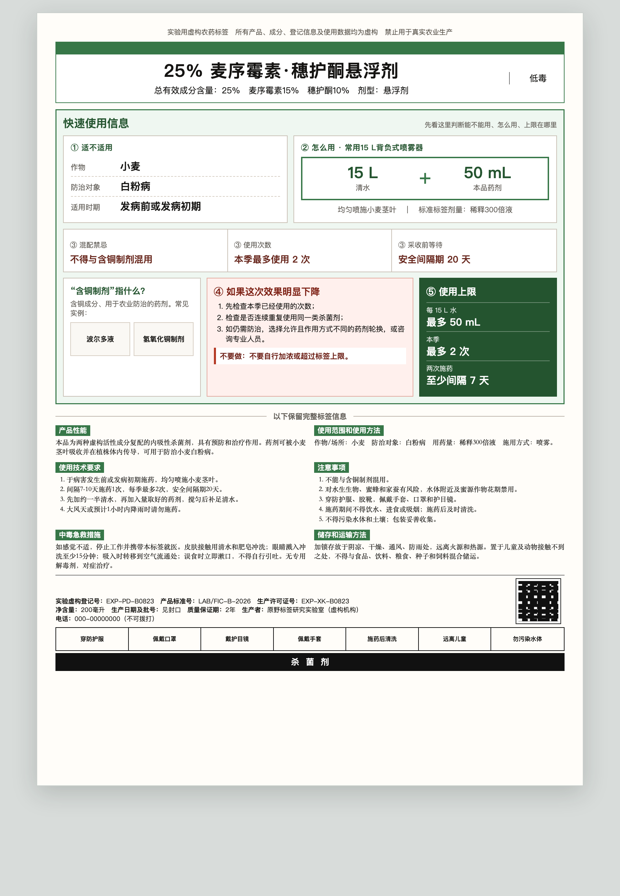
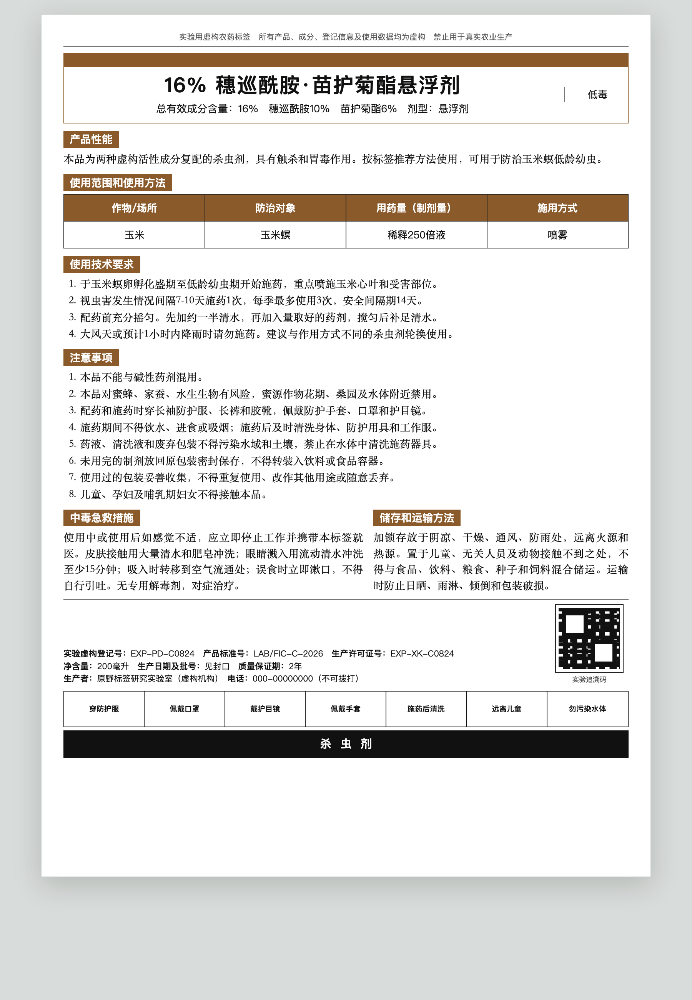
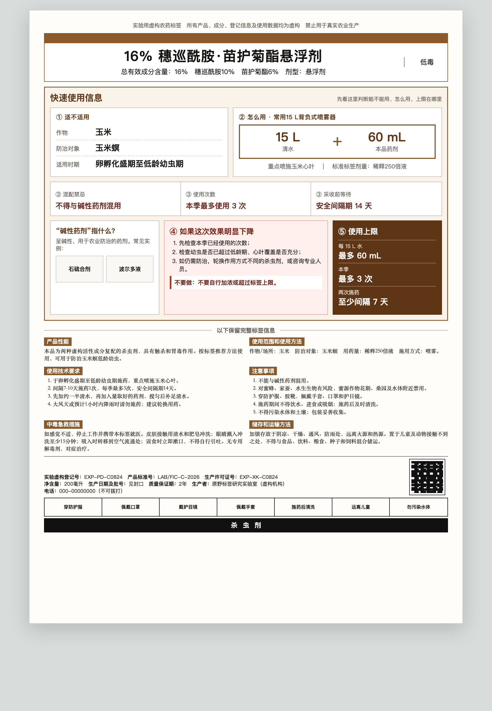

三款农药标签 · 原始静态 vs 增强静态
主要作物限定为玉米和小麦；三种作用类型分别为除草剂、杀菌剂、杀虫剂
原始静态 · Baseline增强静态 · Information Enhancement
PRODUCT A
玉米除草剂
一年生禾本科杂草
15 L＝75 mL


PRODUCT B
小麦杀菌剂
白粉病
15 L＝50 mL


PRODUCT C
玉米杀虫剂
玉米螟
15 L＝60 mL

